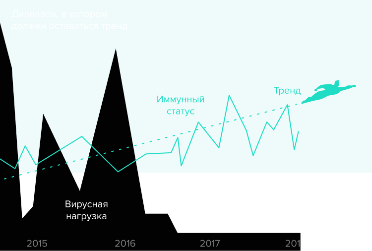
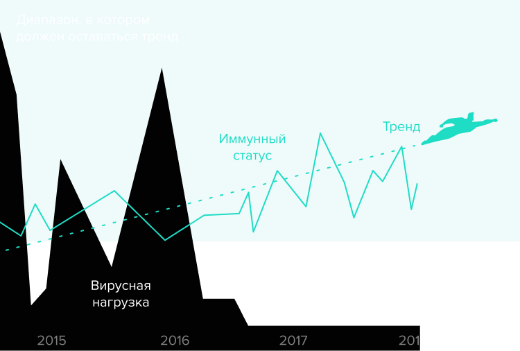

Продолжаю
Установить
Бесплатный бот в телеграме напомнит о приёме лекарств и покажет, как терапия действует на организм
Отправьте боту
результаты анализов
Когда вы получаете результаты по вирусной нагрузке и иммунному статусу, сообщайте их чат-боту. Данные можно вносить в любой последовательности и в сокращённом виде.

Посмотрите, как действует терапия
Вам не надо держать в голове результаты анализов за весь период терапии. В любой момент вы можете посмотреть, как изменился ваш иммунный статус и вирусная нагрузка за месяцы или годы лечения ВИЧ-инфекции.
 
